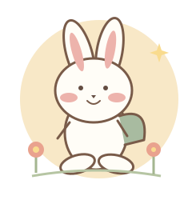

DAYUN’S LITTLE JAPANESE NOTE다윤아, 오늘도
다윤아, 오늘도
일본어랑 놀자 ☀
조금씩, 즐겁게. 오늘의 한 단어를 만나봐!
STEP 01 · READ & SAY
한 단어, 여섯 가지 모습
소리를 듣고, 다윤이 목소리로 따라 해봐.
머릿속에 쏙! 암기 퀴즈
뜻을 보고 알맞은 일본어를 골라봐.
🌙 아빠의 밤 점검 미션
잠들기 전 딱 3분, 아빠랑 오늘의 일본어를 꺼내봐.
학습 기록은 이 브라우저에 저장돼요.
다른 기기와 공유되지 않으며, 방문 기록 삭제 시 지워질 수 있어요.